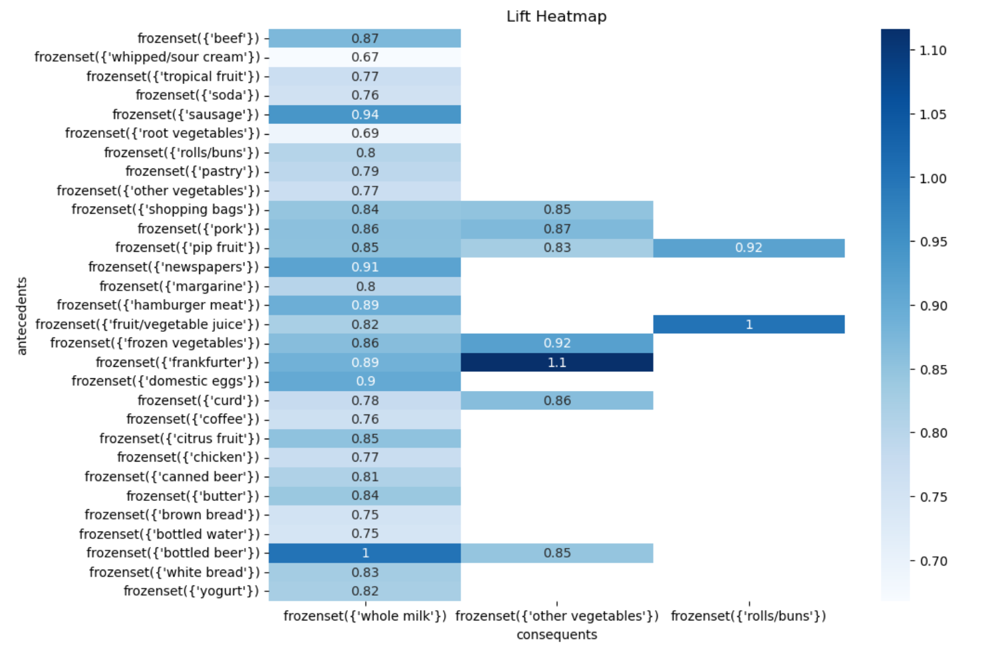

Association Rule Mining Grocery Report
A detailed report on the resulting association rules.
View Report

Explore how frequent purchases at the grocery store are associated using a dataset with information on 38,765 purchased items.
A PDF from Python is available to show the code used.
This project explores the patterns in grocery purchases and identifies interesting associations between items. Below are the report and the Python code used to generate the analysis and visualizations. Some highlights:
A detailed report on the resulting association rules.
View Report